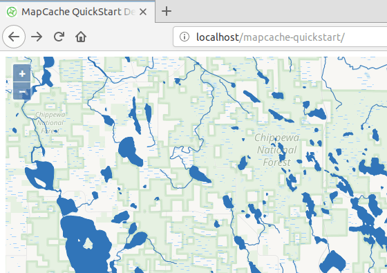

MapCache Snabbstart¶
MapCache är en tile-server som snabbar upp åtkomsten till WMS-skikt. Den kan köras som en CGI-applikation under många olika webbservrar eller som en Apache-modul. OSGeoLive har MapCache installerat och konfigurerat som en Apache-modul.
Den här snabbstarten visar hur du lägger till ett nytt WMS-lager i en MapCache-konfiguration, visar kakeltjänsten i en OpenLayers-webbkarta och seedar en kakelcache från kommandoraden.
Innehåll
Lägga till ett nytt Tileset och visa det i OpenLayers¶
MapCache konfigureras med hjälp av XML-filer. OSGeoLive innehåller ett exempel på en konfigurationsfil i /usr/local/share/mapcache/mapcache-quickstart.xml. Exemplet använder OSGeoLives demo MapServer-applikation för Itasca County i USA som källa.
I den här snabbstarten kommer vi att konfigurera cachelagring av plattor för ett ytterligare WMS-lager och visa plattorna på en enkel HTML-sida som innehåller en OpenLayers-karta.
Låt oss först öppna konfigurationsfilen för MapCache i FeatherPad - en textredigerare. Öppna FeatherPad från kommandoraden med förhöjda behörigheter, så att du kan spara filen, med hjälp av Systemverktyg > QTerminal och kör sedan kommandot nedan:
sudo featherpad
Vi kan se vilka lager som finns tillgängliga i vår WMS-källserver genom att öppna följande länk: http://localhost/itasca/?service=wms&request=getcapabilities MapCache är konfigurerad att vidarebefordra alla förfrågningar som den inte kan hantera, t.ex. GetCapabilities, till MapServer med regeln som visas nedan:
<forwarding_rule name="catch all">
<http>
<url>http://localhost/cgi-bin/mapserv?map=/usr/local/www/docs_maps/mapserver_demos/itasca/itasca.map</url>
</http>
</forwarding_rule>
Ett av de skiktnamn som anges i WMS Capabilities-dokumentet är dlgstln2 - strömmar för Itasca County. Vi kommer att lägga till detta som en ny tileset till MapCache-tjänsten. Först lägger vi till ett <source> block - det här är konfigurationen för att hämta data från WMS-servern. Lägg till följande XML-block efter det befintliga .<source name="lake_source" type="wms">.</source>.-blocket som används för sjöarna till mapcache-quickstart.xml:
<source name="streams_source" type="wms">
<getmap>
<params>
<FORMAT>image/png</FORMAT>
<LAYERS>dlgstln2</LAYERS>
<MAP>/usr/local/www/docs_maps/mapserver_demos/itasca/itasca.map</MAP>
</params>
</getmap>
<http>
<url>http://localhost/cgi-bin/mapserv?</url>
</http>
</source>
We use the <params> block to pass the WMS layer name, and the image format
back to the WMS server, along with the MapServer specific <map> parameter.
The URL to the WMS server is in the <http> block. For documentation on all
configuration file elements see the Configuration Documentation. Next we will add a
<tileset> block, which defines how the source will be stored and served as
tiles. Place the following block after the existing <tileset
name="lakes">...</tileset> block.
<tileset name="streams">
<source>streams_source</source>
<cache>disk</cache>
<grid>GoogleMapsCompatible</grid>
<format>PNG</format>
</tileset>
Vi ställer in rutnätstypen till det inbyggda GoogleMapsCompatible rutnätet som används som standardrutnät i många webbkartläggningsprogram. name=streams används av klientapplikationer för att komma åt tileset. Vi använder en diskbaserad cache (i stället för att lagra tiles i en databas eller i en molnmiljö).
Varje gång du ändrar konfigurationsfilen för MapCache måste du ladda om Apache för att ändringarna ska träda i kraft. Detta kan köras från kommandoraden på följande sätt:
sudo apachectl -k graceful
Du bör nu kunna komma åt en kakelplatta med följande URL: http://localhost/itasca/gmaps/streams@GoogleMapsCompatible/12/987/1433.png
{kind=link}

Låt oss nu lägga till tileset i vår OpenLayers-karta. Öppna HTML-sidan med hjälp av följande kommando:
sudo featherpad /var/www/html/mapcache-quickstart/index.html
Kommentera ut JavaScript-koden nedan:
,new ol.layer.Tile({
source: new ol.source.XYZ({
url: 'http://localhost/itasca/gmaps/streams@GoogleMapsCompatible/{z}/{x}/{y}.png'
})
})
Uppdatera nu sidan på http://localhost/mapcache-quickstart/ - du bör se det nya strömskiktet som serveras av MapCache.
När du bläddrar på kartan kommer du att se att kakelcachemapparna i /var/cache/mapcache fylls med PNG-bilder.
Plats och typ för cacheminnet anges i följande block i konfigurationsfilen:
<cache name="disk" type="disk">
<base>/var/cache/mapcache</base>
<symlink_blank/>
</cache>
Lägga till nya tjänster¶
Du kan konfigurera Apache så att den kör många olika MapCache-tjänster, var och en med sin egen konfigurationsfil, genom att redigera filen /etc/apache2/conf-enabled/mapcache.conf. Eftersom detta kräver superanvändarrättigheter kan du öppna den för redigering i FeatherPad genom att köra kommandot nedan:
sudo featherpad /etc/apache2/conf-enabled/mapcache.conf
OSGeoLive har två MapCache-tjänster, var och en med ett alias och en konfigurationsfil. Aliaset är den URL som ska användas på servern, t.ex. http://localhost/mapcache och http://localhost/itasca
<IfModule mapcache_module>
<Directory /path/to/directory>
Order Allow,Deny
Allow from all
</Directory>
MapCacheAlias /mapcache "/usr/share/doc/libapache2-mod-mapcache/examples/mapcache.xml"
MapCacheAlias /itasca "/home/user/mapcache.xml"
</IfModule>
För att lägga till en ny tjänst lägger du bara till en ny rad i följande format, där du ersätter WEB_PATH och PATH_TO_CONFIG_FILE med relevanta parametrar:
MapCacheAlias WEB_PATH "PATH_TO_CONFIG_FILE"
Se instruktionerna för Apache-modulen <https://mapserver.org/mapcache/install.html#apache-module-specific-instructions>`_ för mer information om hur du konfigurerar Apache-modulen.
Applikation för såmaskin¶
Kartplattor skapas dynamiskt när de begärs av webbservern. För att snabba upp tiden för begäran kan vi generera brickor med hjälp av en kommandoradsapplikation. Denna process kallas seeding, och MapCache-kommandoradsapplikationen är mapcache_seed.
För att säkerställa att de plattor som skapas av seeder-applikationen är tillgängliga för webbserverkontot lägger vi till sudo -u www-data innan vi kör applikationen mapcache_seed.
I exemplet nedan skickar vi in tre alternativ till mapcache_seed:
config:
/home/user/mapcache/mapcache-quickstart.xml- detta är sökvägen till MapCache-konfigurationsfilentileset:
lakes- this is the tileset name we are going to seed, and is found inmapcache-quickstart.xml- zoom:0,5- this is the range of zoom levels we are going to seed, from zoom level 0 (the extent of the world in a single tile) to zoom level 5
sudo -u www-data mapcache_seed --config /home/user/mapcache/mapcache-quickstart.xml --tileset lakes --zoom 0,5
För de många andra mapcache_seed-alternativen, se Seeder Documentation.

Om du vill ta bort en cachemapp kan du köra följande kommando:
sudo rm -r /var/cache/mapcache/lakes
What next?¶
Gå sedan med i MapServer-gemenskapen, som MapCache är en del av, på e-postlistorna <https://www.mapserver.org/community/lists.html>`_ för att utbyta idéer, diskutera potentiella programförbättringar och ställa frågor.